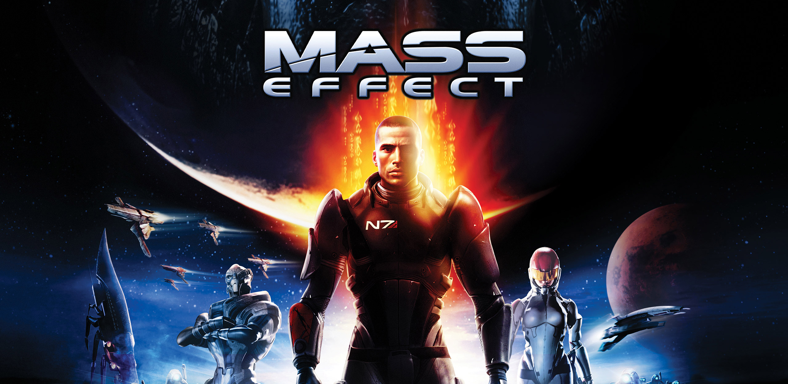
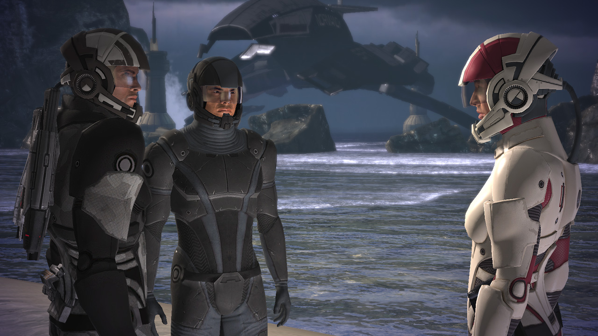

Mass Effect is a 2007 action role-playing-game developed by Bioware and published by Microsoft Game Studios for the Xbox 360. It is the first game in the Mass Effect series, and takes place within the Milky Way galaxy in the year 2183, where civilization is being threatened by a highly advanced machine race known as the Reapers. The player assumes the role of Commander Shepard, an elite human soldier who must stop a rogue agent from carrying out the Reapers’ galactic invasion. The game involves completing multiple quests that generally involve space exploration, squad and vehicular combat, and interaction with non-player characters.
Planned as the first chapter of a trilogy, Mass Effect was developed over the course of three and a half years, and uses the Unreal Engine 3 as its groundwork. It was designed so that the player would assume the role of a central character that could make important decisions and impact the story of the game in numerous ways. The combat was designed to offer the tactics and customization of a role-playing game, but through simpler and real-time third-person shooter interface. In 2008 and in 2009, two downloadable content packs that introduced new missions to the base game were released.
Mass Effect received critical acclaim, and sold over one and a half million copies by January 2008. Critics praised the game’s interactive storytelling and cinematic design, but criticized its unbalanced combat mechanics and poor artificial intelligence. The game received several year-end awards, including Best RPG at the 2007 Spike Video Game Awards and Roleplaying Game of the Year at the 11th Annual Interactive Achievement Awards, and is considered one of the greatest video games of all time. Following the release for the Xbox 360, Mass Effect was ported to Windows by Demiurge Studios and Microsoft Game Studios in 2008, and later on, to PlayStation 3 by Edge of Reality and Electronic Arts in 2012, it was followed by the sequels Mass Effect 2 in 2010 and Mass Effect 3 in 2012. In 2021, Mass Effect was remaste3red as part of the Mass Effect Legendary Edition.
Mass Effect is a single-player action role-playing game in which the player takes the role of Commander Shepard from a third-person perspective. Shepard’s gender, appearance, military background, combat-training and first name are determined by the player before the game begins. There are six different character classes for the player to choose from and each of them have different talents and provide enhanced combat capabilities.
For example, the Soldier class is trained in weapon damage and has improved health, while the Sentinel class is trained in protecting and healing allies.
At one point in the game, players may evolve their base class talent into two specializations, which depend on the class chosen by the player. Although any class can use any weapon type, each class is only effective with the weapons they are trained in.

Commander Shepard and Kaidan (one of the companions) are sent to the human colony of Eden Prime to recover an unearthed Prothean beacon.
Protheans were an ancient mysterious alien race that mysteriously disappeared 50.000 years ago.
They repel an attack by the geth, rescuing Ashley (companion) in the process, though Corporal Jenkins is killed. Saren Arterius, a rogue turian Spectre, activates the beacon before escaping. Shepard reaches the beacon and receives visions of war and death. The main objective of Mass Effect 1 is to take down Saren and gather more allies.
© 2026 HGH